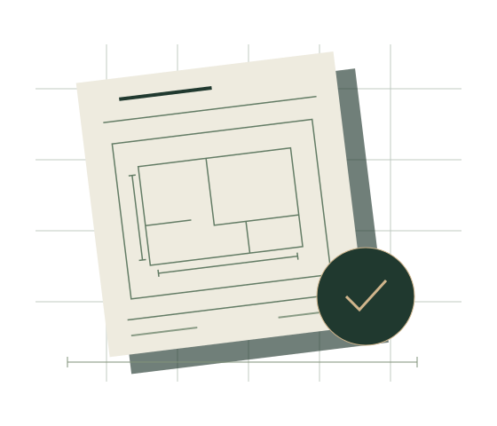

01 /
Avklaring av tiltaket
Vi gjennomgår idéen og underlaget, og kartlegger hvilke spørsmål som må avklares med kommunen.
Byggesøknad
Skal du bygge, endre eller bruke boligen på en ny måte? Vi hjelper deg med å avklare søknadsbehovet og samle underlaget for neste steg.
Bergen & Bjørnafjorden · Bygg og ingeniørtjenester
SKISSE & HÅNDVERK / Byggesøknad

Et gjennomtenkt utgangspunkt
En byggesak starter med eiendommen og det du ønsker å få til. Vi ser på prosjektet, tilgjengelige tegninger og relevante planbestemmelser, og avtaler hvilken bistand du trenger. Ask & Karstad arbeider med bygg og ingeniørtjenester i Bergen og Bjørnafjorden.
Søknadsplikt, ansvarsroller og behov for andre fag avhenger av tiltaket. Omfanget av vår bistand avtales for den enkelte saken.
Dette er nyttig å ha klart
Adresse, eksisterende tegninger og en kort beskrivelse av hva du vil bygge eller endre. Bilder og skisser er også nyttige.
Avtalte leveranser
01 /
Vi gjennomgår idéen og underlaget, og kartlegger hvilke spørsmål som må avklares med kommunen.
02 /
Vi kan bistå med plan-, fasade- og snittegninger og samordne avtalt søknadsunderlag.
03 /
Bistand med nabovarsel, søknadsdokumentasjon og eventuell dispensasjon avklares ut fra prosjektets behov.
Slik arbeider vi
Vi gjør behovet for underlag og avklaringer tydelig før vi går videre. Kommunen vurderer søknaden; en innsendt søknad er ingen garanti for tillatelse.
01 /
Du forteller om tiltaket. Vi går gjennom eiendommen, ønskene dine og underlaget som finnes.
02 /
Leveranse, roller og nødvendige tegninger avtales. Behov for nabovarsel og dispensasjon vurderes.
03 /
Avtalt dokumentasjon utarbeides. Innsending og eventuell oppfølging inngår når det er avtalt.
Før vi setter i gang
Det avhenger av tiltaket og forholdene på eiendommen. Også arbeid som kan være unntatt fra søknadsplikt, må være i samsvar med relevante planer og krav. Vi kan hjelpe med å avklare utgangspunktet.
Ja. Send en kort beskrivelse, adresse og gjerne bilder eller en skisse. Vi vurderer hvilke tegninger og andre avklaringer som trengs.
Behovet må vurderes mot bestemmelsene som gjelder for eiendommen. Bistand med begrunnelse og dokumentasjon kan avtales. Det er kommunen som avgjør om dispensasjon kan gis.
Tiden avhenger blant annet av nødvendig underlag, sakstype og kommunens behandling. Vi avtaler fremdriften for vår leveranse etter at prosjektet er kartlagt.
La oss snakke om prosjektet ditt
Fortell om eiendommen og byggeidéen. Vi starter med det du vet, og avklarer hvilket underlag som trengs.